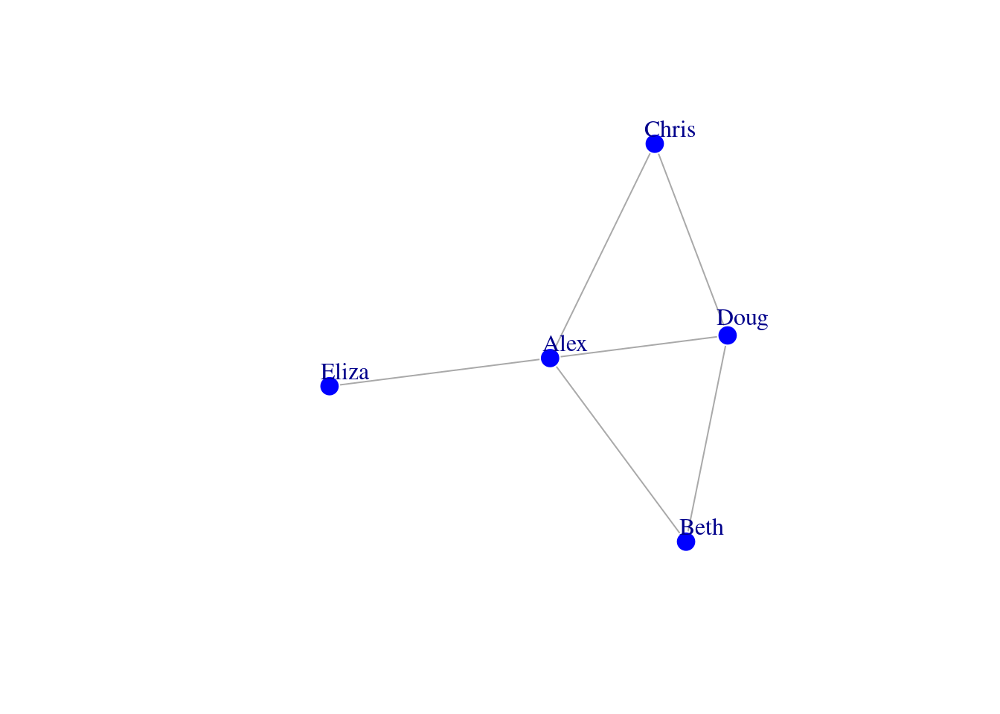

Chapter 4 Chapter 4: From data to networks
4.1 How are networks represented?
It helps to have a very concrete idea of how your network is depicted in this programming environment. To illustrate this, let’s create a simple network of 5 people. Each person is represented by a circle, called a node. If they are friends with each other, a connection or an edge is placed between them.
# create a simple example
g <- graph_from_literal(Alex-Beth, Chris-Doug, Eliza-Alex, Beth-Doug,
Alex-Chris, Doug-Alex)
# visualize the network
plot(g, vertex.color = 'blue', vertex.frame.color = 'white', vertex.size = 10,
vertex.label.dist = 1.5)
All of the information associated with the connectivity structure of these 5 people can be represented in two ways: in an edge list or an adjacency matrix. The following sections will demonstrate what data in an edge list and adjacency matrix looks like, and how to import the data into RStudio so that it corresponds to the network representation that you want.
4.2 Edge List
An edge list is exactly what it says it is. A list of edges (connections) in the network. Below you can see that each edge is represented on a separate row and the name of each node in the relationship is listed in separate columns.
| Alex | Beth |
| Alex | Chris |
| Alex | Doug |
| Alex | Eliza |
| Beth | Doug |
| Chris | Doug |
Specifically, an edge list refers to a type of network data representation where each row represents a single edge in the network with at least 2 columns where the labels of connected nodes are provided. The number of rows in the edge list corresponds to the number of edges in the network. Additional columns can be specified that provide more information about the edges (e.g., type, weight). These become additional “edge attributes” of the network.
4.3 Adjacency Matrix
An adjacency matrix refers to a type of network data representation known as an adjacency matrix where the edge connectivity is represented in the matrix. The number of rows and columns correspond to the number of nodes in the network. A non-zero value in the [i,j] element of the adjacency matrix indicates the presence of a link between node i and node j.
So in this case, the matrix has 5 rows and 5 columns (a square 5 x 5 matrix). The rows and columns are labelled with the node names. The cell carries a value of 1 if two people are connected, 0 if not connected. In this example, if we look at the first row, we can easily tell that Alex is the social butterfly of the group; he’s friends with everyone in the network!
| Alex | Beth | Chris | Doug | Eliza | |
|---|---|---|---|---|---|
| Alex | 0 | 1 | 1 | 1 | 1 |
| Beth | 1 | 0 | 0 | 1 | 0 |
| Chris | 1 | 0 | 0 | 1 | 0 |
| Doug | 1 | 1 | 1 | 0 | 0 |
| Eliza | 1 | 0 | 0 | 0 | 0 |
Eagle-eyed readers will realize that this matrix is symmetrical! This means that if you slice the matrix on its diagonal starting from the top left to the bottom right, the positions of filled cells are mirrored on the other side. This makes sense if we assume that the friendship of Alex and Beth goes both ways (Alex considers Beth a friend and Beth considers Alex a friend). In network science terms, we say that there is an undirected edge between Alex and Beth. We’ll get into the nitty gritty about the different types of edges a network could have later on.
4.4 Importing your data and converting into a network
After reading the previous section, you should be able to identify whether your data set takes the form of an edge list or adjacency matrix, and if not, take the necessary steps to convert the data into one of these two formats. Depending whether it is an edge list or adjacency matrix, we will make use of different functions to convert the connectivity information into an igraph network object so that we can start to analyze it further.
Another point to note is that you as the modeler will have to make decisions about the type of edges your network will have. Should the edges be undirected or directed, and/or unweighted or weighted? While there are no objectively right or wrong decisions, there are probably better or worse decisions that would depend mostly on your own research questions, interpretation of the data set, and the extant network science literature on similar topics.
A final point to note is that I have created sample .csv files based on the famous Zachary Karate Club network for demonstrating the code below. All supplementary data can be obtained from Github (https://github.com/csqsiew/csqsiew.github.io/tree/main/data), and are stored in a subdirectory called /data from which I am reading from. Based on chapter 2 (finding files) you should be able to make the corresponding modifications to the read.csv() parts of the code.
4.4.1 Importing edge lists
A. You want a network with undirected, unweighted edges.
karate_el <- read.csv('data/karate_el.csv', header = FALSE)
karate_uu <- graph_from_data_frame(karate_el, directed = FALSE)
summary(karate_uu)## IGRAPH 752cc43 UN-- 34 78 --
## + attr: name (v/c)Things to note:
header = FALSEin the first line - this is because there are no column headers in thekarate_el.csvfile! You can inspect and verify this for yourself.directed = FALSEin the second line - this tells R that the edges are to be interpreted as undirected.graph_from_data_frameis the function you would use for edge lists, which have been imported into RStudio as a data frame object.
B. You want a network with directed, unweighted edges.
karate_el <- read.csv('data/karate_el.csv', header = FALSE)
karate_du <- graph_from_data_frame(karate_el, directed = TRUE)
summary(karate_du)## IGRAPH ecef2b9 DN-- 34 78 --
## + attr: name (v/c)Things to note:
directed = TRUEin the second line - this tells R that the edges are to be interpreted as directed. The direction of the edges runs from the nodes in the first column of the edge list to the nodes in the second column of the edge list.
C. You want a network with undirected, weighted edges.
karate_el <- read.csv('data/karate_el_weights.csv', header = TRUE)
karate_uw <- graph_from_data_frame(karate_el, directed = FALSE)
summary(karate_uw)## IGRAPH c9c74fb UNW- 34 78 --
## + attr: name (v/c), weight (e/n)Things to note:
- A different file is used:
karate_el_weights.csv. Open the file and see for yourself that there is an additional column calledweight. We can consider this to be a representation of the strength of relationship between two karate club members. Additional columns in an edge list are interpreted as edge attributes - see if you can spot it in the summary output ofkarate_uw. header = TRUEin the first line - this is because there are column headers in thekarate_el_weights.csvfile!
D. You want a network with directed, weighted edges.
karate_el <- read.csv('data/karate_el_weights.csv', header = TRUE)
karate_dw <- graph_from_data_frame(karate_el, directed = TRUE)
summary(karate_dw)## IGRAPH c1f2508 DNW- 34 78 --
## + attr: name (v/c), weight (e/n)4.4.2 Importing adjacency matrices
A. You want a network with undirected, unweighted edges.
karate_am <- read.csv('data/karate_adj.csv', header = TRUE, row.names = 1)
karate_am <- as.matrix(karate_am) # converts dataframe into a matrix object
isSymmetric(karate_am) # sanity check that the matrix is symmetric ## [1] TRUE## IGRAPH 73a638a UN-- 34 78 --
## + attr: name (v/c)Things to note:
- The arguments
header = TRUEandrow.names = 1in theread.csvfunction specify that there are column headers and row names in the first column of the dataset. Notice that the column and row labels (which correspond to the node names) are identical across both inkarate_adj.csv. - We need to use the function
as.matrixto convert the dataframe object into a matrix object, since thegraph_from_adjacency_matrixexpects a matrix object. - I included a sanity check - using
isSymmetricto check if the matrix is symmetric down the diagonal. This is good to do because when creating an undirected network from an adjacency matrix,graph_from_adjacency_matrixexpects a symmetric matrix, and returns a warning message if this is not true. - Notice that we need to use a different function,
graph_from_adjacency_matrix, for converting the matrix into a network.
B. You want a network with directed, unweighted edges.
karate_am <- read.csv('data/karate_adj.csv', header = TRUE, row.names = 1)
karate_am <- as.matrix(karate_am) # converts dataframe into a matrix object
isSymmetric(karate_am) # sanity check that the matrix is symmetric ## [1] TRUE## IGRAPH 8c4038e DN-- 34 156 --
## + attr: name (v/c)Things to note:
directed = TRUEin thegraph_from_adjacency_matrixfunction - this tells R that the edges are to be interpreted as directed. For each non-empty cell in the matrix, the direction of that edge would be from the node in the row, to the node in the column. See figure below for a depiction.- Because of this directedness interpretation, and given that the matrix is symmetric, this implies that the network’s edges are “double counted”. A directed connection from node A to B is counted separately from the directed connection from node B to A. You can see that the number of edges in the
summaryoutput of this network is twice that of the previous network.
C. You want a network with undirected, weighted edges.
karate_am <- read.csv('data/karate_adj_weights.csv', header = TRUE, row.names = 1)
karate_am <- as.matrix(karate_am) # converts dataframe into a matrix object
isSymmetric(karate_am) # sanity check that the matrix is symmetric ## [1] FALSEkarate_uw <- graph_from_adjacency_matrix(karate_am, mode = 'undirected', weighted = 'weight')
summary(karate_uw)## IGRAPH 9afcce2 UNW- 34 100 --
## + attr: name (v/c), weight (e/n)Things to note:
- See if you can tell how
karate_adj_weights.csvis different fromkarate_adj.csv. The numbers in the cells for the former file can take on values other than 0s and 1s. This is typically used to depict the weight of the connection between two nodes. weighted = 'weight'informsigraphthat the values in the cell (which range from 1 to 5) are to be assigned as values of an edge attribute called'weight'. This is how you get a network with weighted edges.
D. You want a network with directed, weighted edges
karate_am <- read.csv('data/karate_adj_weights.csv', header = TRUE, row.names = 1)
karate_am <- as.matrix(karate_am) # converts dataframe into a matrix object
isSymmetric(karate_am) # sanity check that the matrix is symmetric ## [1] FALSEkarate_dw <- graph_from_adjacency_matrix(karate_am, mode = 'directed', weighted = 'weight')
summary(karate_dw)## IGRAPH db9c71e DNW- 34 103 --
## + attr: name (v/c), weight (e/n)4.5 Exercise
Janelle is interested in modeling the social network structure of her cats. In order to construct the network, she observed the interaction patterns of her cats for a week. Here are her observations:
- Niko and Russell seem to get on quite well. Niko likes to eat Russell’s food.
- Annabelle and Sammy were adopted at the same time and tend to stick close to each other.
- Janelle noticed that Jo has been napping next to Jack in the study room.
- Sammy, Russell, and Groucho love playing with the ball of twine in the living room.
- Groucho and Russell are elderly cats who seem to have a mutual respect for each other.
- The only cat that Dottie is able to tolerate is Niko.
Your task is to:
- create the raw data file for this network (a .csv file)
- convert the data into a network object in igraph
- visualize the network using
plot(network_name) - print the output of the network object
- save your network object as a .RData (and see if you are able to reload it into RStudio)